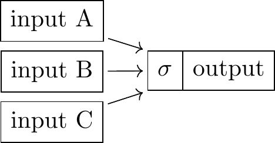
- This note will discuss models of AI’s equilibrium impact on the economy.
-
In the last 10 years there have been a dozen papers written trying to predict the effects of AI that give a wide range of predictions about the effect on productivity, wages, and inequality. I will discuss these models and try to explain the relationship between assumptions and predictions.1
-
We mostly doesn’t discuss evidence for the size of the productivity effects from AI or which types of activities it will directly impact. Instead the note focusses on the equilibrium effects - how society will rearrange itself to make room for AI through changes in wages, employment, and distribution of income.
- Summary of predictions.
-
This is a somewhat opinionated take on the models below:
-
- AI will increase total goods and services and, to a smaller extent, decrease the amount that people choose to work.
-
- The sectors in which AI has the biggest productivity effects will likely come to employ fewer people, and people who have skills which are replaced by AI will have lower wages and employment.
-
- AI will increase real wages but it will likely increase the returns to capital more (i.e. reducing the labor share of income).
-
- It is unclear whether AI will raise the wages of the more-educated or less-educated more.
-
- If AI can outperform most humans at every task (AGI) then it will cause a huge boost in output but decrease wages (the returns to working), because computers compete with humans for land and energy inputs.
- Many of the models discussed can be summarized with diagrams.
-
Most of the differences between models comes down to assumptions on the degree of substitutability between different inputs, specifically (1) how substitutable are computers for humans in producing certain goods; and (2) how substitutable is the demand for different types of goods. The key substitutability assumptions of most of these models can be illustrated with a diagram showing networks of inputs and outputs, here \(\sigma\) represents the elasticity of substitution: \(\sigma=0\) means perfect complements, \(\sigma=\infty\) means perfect substitutes. I explain below how to interpret the elasticity of substitution formally.
- I also list some things I think are missing from the literature.
-
To me the most notable hole in the literature is a theory of what types of tasks AI will be good at. The majority of the papers discussed assume a single dimension of task “difficulty” and represent AI as continuation of progress in capital’s ability to do progressively more difficult tasks. However it seems clear that recent AI models have a distinctively different pattern of capabilities than the distribution across people.
Models
- We will build up a series of models of the impact of AI.
-
In this section I start from the simplest model and gradually add complications with references to individual papers. The following section lists each of the papers and describes their assumptions and implications.
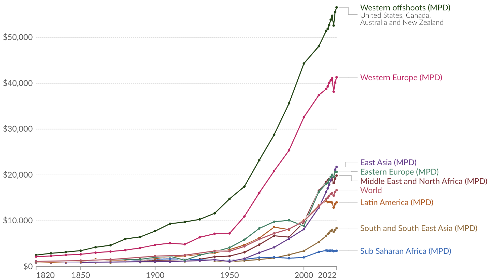 In Western countries GDP/capita has increased by about 20 times over 1820-2022 (Our World in Data)
- In the simplest model AI increases output.
-
In developed countries the amount of output produced per person has increased by around 20X over the last 200 years. The simplest model of AI is that it continues that growth in productivity.
- At right we illustrate this with the simplest of diagrams: output is a function of labor, and we color the arrow from labor to output blue to represent growth in labor productivity.
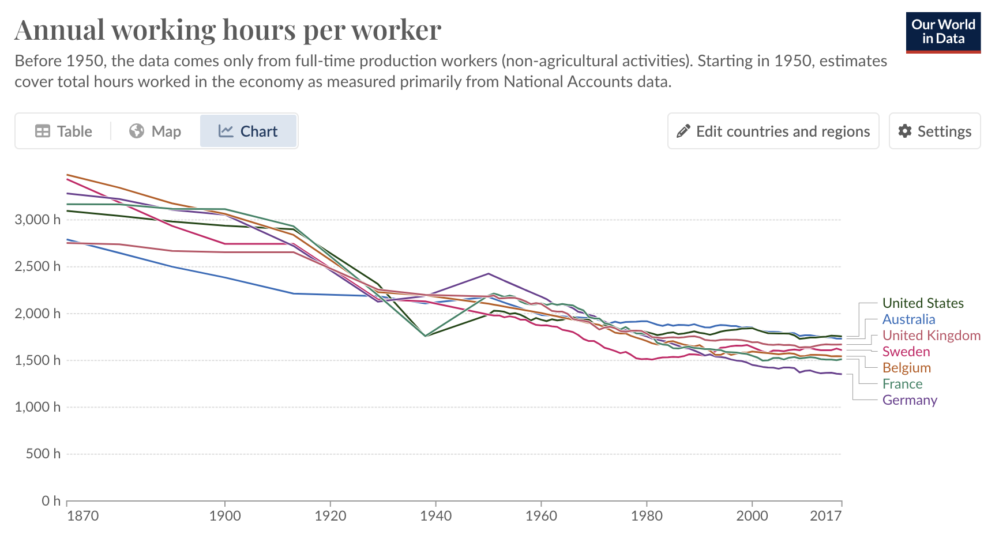 Hours worked per worker fell by about 50% since 1870. In addition people now start work at later ages and spend more years in retirement (Our World in Data)

- AI will reduce hours worked.
-
Over the last 100 years output/worker has grown by about 10X in developed countries, and hours worked have fallen by about 50%. Thus if AI increases productivity we could expect that it will decrease the total hours worked, although by a much smaller proportional amount than the increase in output.2
- We can represent the tradeoff between output and leisure in the diagram at right (leisure is defined as time spent not working). The arrow from time to output is colored blue to represent an increase in productivity. The historical trends imply an elasticity of substitution around 0.7.3
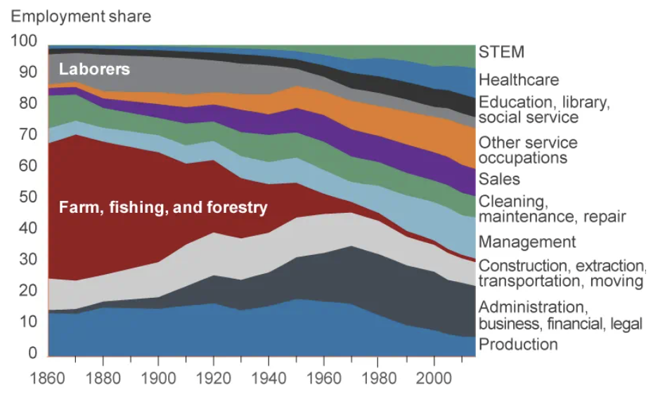 US employment shares over time (Cleveland Fed)
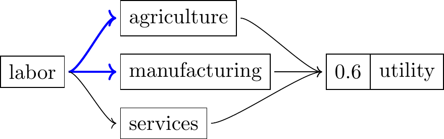
- Employment will decline in the sectors where productivity increases.
-
AI is likely to increase productivity (output/hour) much more in some sectors. This could cause employment to either increase or decrease in the most-affected sectors. Historically the sectors which have had the highest growth in productivity have tended to shrink in employment. Over the last 150 years employment has shifted from agriculture, to manufacturing, and then to services, roughly in line with productivity growth in each sector. Put another way, people became satiated with cheap agricultural goods, and then satiated with cheap manufactured goods, and so now spend most of their income on services.4
- This pattern can be represented by the elasticity of substitution. Ngai and Pissarides (2007) estimate an elasticity of substitution of of 0.6 between agriculture, manufacturing and services from historical changes.
- Thus if AI dramatically increases productivity in knowledge work but not in-person services then we’d expect a reallocation of labor from the former to the latter.
Acemoglu and Restrepo (2022) find that industries with high rates of adoption of automation (e.g. car manufacturing, computer services, metals, chemicals, plastics) had much lower wage growth, even controlling for the level of education.
- Workers with skills replaced by AI will suffer extended loss of earnings.
-
Labor does not flow perfectly between occupations. Historically we have seen that people whose skills are replaced by automation have lower incomes: Acemoglu and Restrepo (2022) estimate that automation had large negative effects on US workers who had skills that were automated, Autor, Dorn, and Hanson (2021) estimate that competition from China had large persistent declines in employment and income for those who worked in manufacturing.
-
However different empirical studies find different results:
- Giuntella, Lu, and Wang (2022) finds adoption of robots in China reduced employment and wages.
- J. Bessen et al. (2023) finds that automation decreases the employment of incumbent workers in Holland, but they find no effect of computer adoption.
- Humlum (2019) estimates that robot adoption in Denmark increased lowered the wages of production workers by 5% but raised average real wages by 0.8%.
- Adachi, Kawaguchi, and Saito (2024) find that robot adoption in Japan, instrumented with robot prices, caused an increase in employment in the corresponding sector.
- Hotte, Somers, and Theodorakopoulos (2023) reviews 127 studies on technological change and employment.
- A number of recent papers model frictions that prevent efficient adjustment: Costinot and Werning (2023), Beraja and Zorzi (2022), Lehr and Restrepo (2022).
Since 1963 the real hourly wages have grown by 70% for male workers with post-college educations, but have been essentially unchanged for high school dropouts. Note that over the same period there was a large increase in education which normally would be expected to have a counterbalanced effect (i.e. lowering the relative wages of the educated).
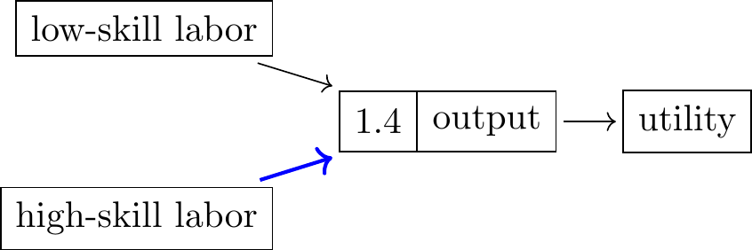
- The relative effect of AI on educated or uneducated workers is unclear.
-
It is hard to say whether AI will have a bigger effect on educated or uneducated workers.
- Over 1980-2000 the wages of college graduates increased dramatically relative to non-college graduates in the US, despite a big increase in the number of college graduates over the same period.
- A common explanation is that technology disproprtionately increased the productivity of high-skill labor (people who could use computers), and that the work of low-skill and high-skill labor are relatively substitutable (\(\sigma>1\)), thus an educated office worker could now do work that otherwise would be done by a secretary and clerk. Katz and Murphy (1992) estimate an elasticity of substitution between college and high-school labor of 1.4 (Katz and Murphy 1992).
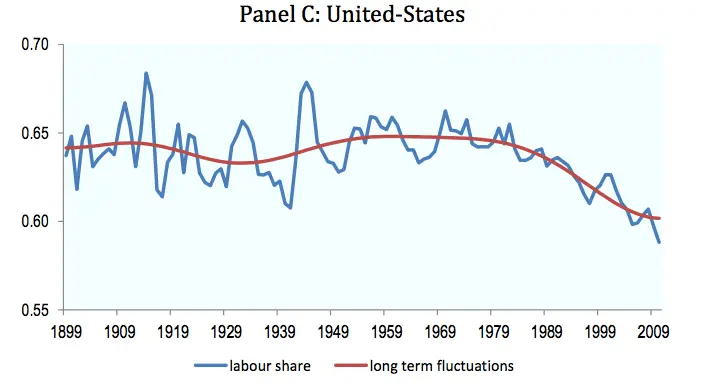 from ILO (2015).
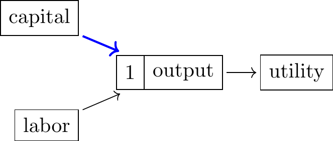
- The labor share may fall.
-
A lot of the discussion about AI focusses on what share of GDP will be paid to labor (in wages) and what share will be paid to capital. Over the last 100 years the share of income going to labor in Western countries has typically hovered around 2/3, but it has declined somewhat since 1980.5
- A simple model of the economy is that output is produced by labor and capital (businesses, land, energy, computers), and each is paid their marginal product. We can model AI as increasing the effective productivity of capital inputs (the blue arrow). This will increase the marginal product of both capital and of labor. If we assume that the elasticity of substitution is 1 (AKA Cobb-Douglas) this would imply that the returns to capital and labor increase by equal amounts, and so the labor share of income remains constant.6
- The recent decline in the labor share has had a number of explanations, most prominent is Autor et al. (2020) who note that it is mostly driven by a reallocation of product market shares towards firms with higher productivity and lower labor costs, & they attribute that to technological changes which have strengthened competition.7

- Wages will depend on the substitutability across goods.
-
We can instead divide the economy into \(N\) different tasks (or “intermediate goods”) and model the impact of AI as progressively allowing AI to perform more tasks. The implication for labor income will depend on the substitutability of the different tasks in utility.
- Zeira (1998) assumes each task can be produced either by labor or capital (i.e. their elasticity of substitution is \(\infty\)), and over time we progressively learn how to automate different tasks, illustrated by the blue arrow connecting capital to task \(n\). They also assume that the relative productivity of capital and labor between tasks is the same (we return to this below). If the share of income spent on each task remains constant (\(\sigma=1\)) then the capital share will be equal to the fraction of tasks that are automated, and so will steadily increase with automation.8
- However it is more reasonable to assume that \(\sigma<1\), consistent with the discussion above on structural change. This implies that, as each task is automated, the expenditure on that task will fall. When an additional task is automated there are two effects on labor income: (1) the price of that good falls, increasing the real wage; (2) the demand for labor to produce that good falls, decreasing the real wage.
- In fact the capital share has stayed mostly constant over the last 150 years despite a great deal of automation. Aghion, Jones, and Jones (2019) note that the capital share could be stable if (1) the elasticity of substitution between goods is below 1, i.e. they are gross complements (consistent with the evidence on structural change given above), and (2) the progress of automation is becoming progressively slower, e.g. if a constant fraction of the remaining human tasks are automated each year. Korinek and Suh (2024) make a related argument, that labor income will increase if automation is sufficiently slow (there is a “long tail” of tasks).
In the US the majority of workers in 2018 are in occupations that did not exist in 1940 (red bars), from Autor et al. (2024).
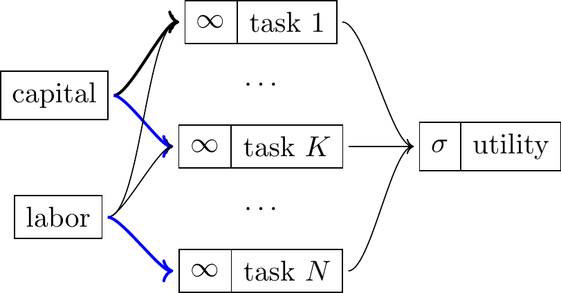
- AI is likely to create new occupations.
-
In addition to shifting people between occupations, technology has created entirely new occupations: Autor et al. (2024) find that the majority of US workers in 2018 have job titles that did not exist in the Census of 1940. Acemoglu and Restrepo (2018) have a task model in which technological progress extends the abilities of both capital and labor: it allows capital to perform an additional human-only task \(K\), and it allows labor to perform an entirely new task \(K\). This can generate a steady progress of automation while still maintaining a constant labor share of income.
- The effect of AGI on wages is likely negative.
- The following points discuss the implications of computers being able to do all human work, AKA Artificial General Intelligence (AGI). We show that the implications for wages will depend on the degree of comparative advantage, and the relative consumption of inputs like land and energy.
- If we have AGI and no comparative advantage then wages will fall.
-
The task-based models discussed so far describe an equilibrium where only some tasks are automated, and the labor share is maintained either because the remaining human-done tasks become more valuable (Aghion, Jones, and Jones (2019)) or technological progress creates new human-only tasks (Acemoglu and Restrepo (2018)). These assumptions are necessary to fit historical data.
- However it is reasonable to ask what would happen if AI can do all the tasks that humans can do. We first assume that humans and computers have the same relative costs of doing each task (assumed in Aghion, Jones, and Jones (2019) and Korinek and Suh (2024)). In this case humans and computers are essentially interchangeable, and so the price of computers will rise and the price of humans will fall until they are the same. Korinek and Suh (2024) note that this will cause wages to decline in absolute terms: the comparative advantage between humans and machines has disappeared, so the marginal value of human labor is what it would be in a world without capital. This will hold whether capital is fixed or endogenous. However note that despite wages falling total output will be very large, this is primarily a distribution problem.
- If humans retain a comparative advantage then wages would remain high.
-
The previous conclusion relied on humans and computers having the same relative costs across tasks. However it’s clear that some human tasks are relatively much easier for a computer, e.g. doing numerical calculation, relative to transcribing a recording. This implies that even if computers can do every task there are differences in comparative advantage, and thus gains from trade. This argument is made by Smith (2024): “humans will have plentiful, high-paying jobs in the age of AI dominance.”
- Under this assumption achieving AGI will cause high wages, but further growth in computer capabilities (or further accumulation of capital) will not increase human wages any further, and therefore the labor share of output will fall.9
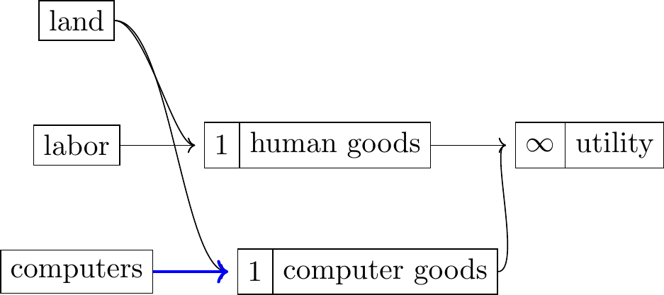
- If computers and humans compete for other inputs then AGI will lower wages.
-
Suppose as before that computers can do all human tasks, but that they require energy, space, or materials. Then increasing the productivity of computers will cause those other factors of production to be shifted towards computer production, which will lower the marginal product of labor, and thus will lower wages.
- This was essentially the case of horses: they still have a comparative advantage relative to cars but their input and maintenance costs are much higher, and for that reason the economic value of horses has fallen dramatically.10
- Korinek and Suh (2024) briefly discuss competition for fixed factors. A NY Times article reports responses from a few economists (Autor, Acemoglu) to a comparative advantage argument who say that they do not expect computers to be able to do all human tasks, but if they do then they do not think wages will hold up because of the resource costs. Autor: “humans have a real cost of upkeep,… Accordingly, humans might become a noncompetitive factor of production for any activity.”11
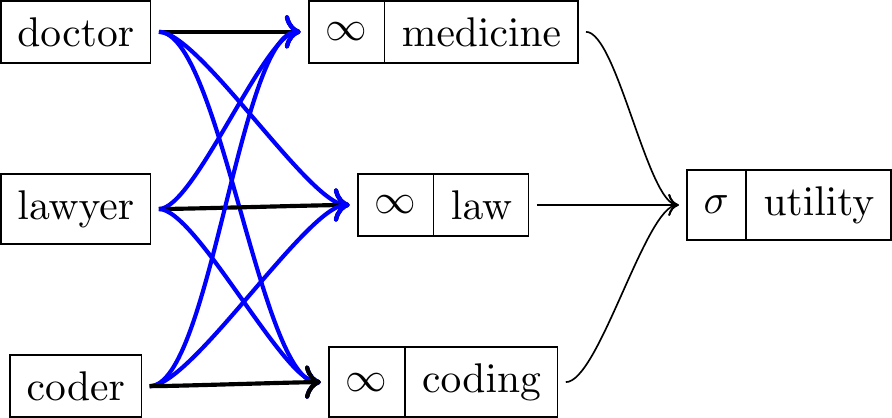
- Knowledge sharing: wages will level up.
-
This is a model that I have not seen in the literature but it seems natural way of representing how LLMs are being used in practice.12. Suppose each person’s comparative advantage is constituted by their private knowledge, but LLMs make that private knowledge public. Now the doctor can be a proficient lawyer, and vice versa. This has a number of implications:
-
- Overall output will increase, especially in high-paid professions where knowledge is scarce (medicine, engineering, law), and wages will flatten.
-
- Measured GDP is likely to fall because exchange of services will be less necessary, as knowledge is shared.
-
- The incentives to discover new information will weaken, because there will be less return from possessing private information.
- AI contributions to productivity growth.
-
A number of recent papers discuss AI’s ability to directly contribute to innovation: Aghion, Jones, and Jones (2019), Nordhaus (2021), Davidson (2021), Erdil and Besiroglu (2023), Trammell and Korinek (2023).
- AI and directed technical change.
-
A number of papers discuss the ability to direct technical change, e.g. Acemoglu and Restrepo (2018) have a model in which innovation can either create new tasks for computers or new tasks for humans. Brynjolfsson (2023) and Autor (2024) discuss in an informal way the potential for human-augmenting vs human-automating AI innovation.
- Asset pricing.
-
A number of recent papers discuss how AI will be reflected in asset prices. Chow, Halperin, and Mazlish (2023) argue that expectations of AI should increase real interest rates through both (1) expectations of higher future consumption, and (2) concerns about existential risk. However they find little evidence that interest rates have increased. Eisfeldt et al. (2023) find that, on the release of ChatGPT, the value of firms with higher share of workers that are “exposed” to AI relatively increased.
Models of Automation and AI (Chronological)
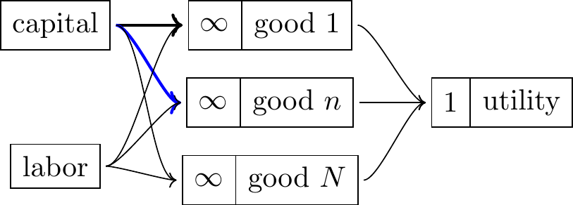
- Zeira (1998) “Workers, Machines, and Economic Growth”
-
Zeira (1998) divides the economy into \(N\) intermediate goods, each of which can be produced by labor, and some can additionally be produced by capital. Assuming that all the goods have elasticity of substitution of 1 means the capital share of the economy will be exactly the share of goods that can be produced by capital.13
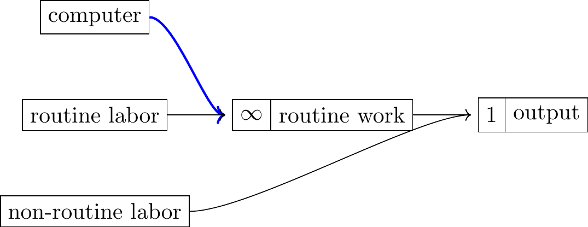
- Krusell et al. (2000), “Capital-skill complementarity and inequality: A macroeconomic analysis”
-
They argue that the rise in the skill premium can mainly be explained by complementarity between capital and skill, rather than by a change in technology that increases the returns to skill.
- They construct a nested production function with four inputs (capital equipment, capital structures, skilled labor, and unskilled labor), and they estimate elasticities of substitution between each of the inputs.
- Autor, Levy, and Murnane (2003), “The Skill Content of Recent Technological Change: An Empirical Exploration”
-
They split labor into routine tasks (operate tabulating machine, pack goods) and non-routine tasks (design a building, navigate a boat), with substitutability index of 1. They assume that computers are perfect substitutes for routine tasks: this will lower the returns to routine labor, and raise the return to non-routine labor. Each person has a certain productivity in routine vs non-routine tasks. As computer capital grows this increases the wages of non-routine workers, and decreases the wages of routine workers. They say “the model can explain 60 percent of the estimated relative demand shift favoring college labor during 1970 to 1998. Task changes within nominally identical occupations account for almost half of this impact.”
- Routine: “can be accomplished by following explicit rules”; non-routine: “problem-solving and complex communication activities.” They use various measures from DOT to define routine/nonroutine and analytic/manual (p1293). For routine cognitive: “STS, which measures adaptability to work requiring Set limits, Tolerances, or Standards.”
- Professions that have been mostly eliminated: elevator operator, switchboard operator, typist, assembly line worker, data entry clerk, toll booth operator, film projectionist, mail sorter, meter reader, stock broker, parking attendant, printer, bookkeeper, order clerk.
-
\[\begin{aligned} Q &=(L_R+C)^{1-\beta}L_N^\beta\\ C &= \text{computer}\\ L_R &= \text{routine labor}\\ L_N &= \text{non-routine labor} \end{aligned}\]
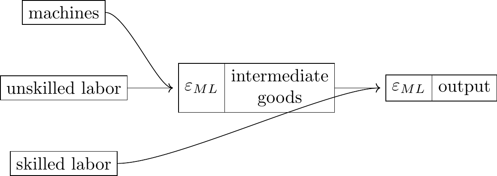
- Sachs and Kotlikoff (2012) “Smart Machines and Long-Term Misery”
-
They assume machines are relatively more substitutable with unskilled than skilled labor, by them both producing intermediate goods. They note that an increase in machine productivity will lower unskilled wages if (1) substitutability of machines and unskilled labor is high (\(\varepsilon_{ML}\) large); (2) substitutability of intermediate goods and skilled labor is low (\(\varepsilon_{SN}\) small); and (3) the share of skilled labor in final output is high.
- They then build an overlapping generations model, where each agent is unskilled in the first period, and can save to invest in a mixture of machinery and skills. They show that a rise in machine productivity can permanently lower the welfare of all succeeding generations through lowering their ability to save. Sachs has a number of other papers with other coauthors that appear to extend this dynamic framework.
- Aghion, Jones, and Jones (2019) “Artificial Intelligence and Economic Growth”
- This paper discusses the task-based model of Zeira (1998), which implies that automation should cause a progressive increase in the labor share. They show that automation can generate balanced growth (meaning the labor share asymptotes to a constant level) if the elasticity of substitution between capital and labor is below 1, and the automation process is such that constant fraction of the remaining human tasks are automated each year.
- They also discuss a model with both production and research, where both are Cobb-Douglas, in which growth will be hyperbolic.
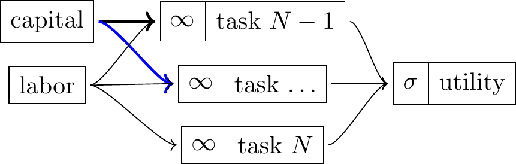
- J. E. Bessen (2016), “How computer automation affects occupations: Technology, jobs, and skills”
- This paper has a model in which there are different types of labor (plumber, lawyer), and each occupation consists of a bundle of tasks. Automation typically automates just one task, which . Bessen gives examples: introduction of the ATM did not lead to fewer bank tellers, introduction of the barcode scanner did not reduce the number of checkout clerks. He says that there are some occupations that have declined due to automation (telephone operators, typesetters), but most occupations that are exposed to automation have increased. He disagrees with Autor, Levy, and Murnane (2003)’s interpretation that computers led to a hollowing out.
- Acemoglu and Restrepo (2018) “The Race Between Man and Machine: Implications of Technology for Growth, Factor Shares, and Employment”
- This model is similar to task models discussed above, but additionally assumes that techincal progress creates new tasks that only humans can do, e.g. “radiology technician” and “management analyst”.
- The model thus generates the observed historical pattern that (a) we are continually automating human tasks, yet (b) the share of labor in output has remained about the same. There’s a continuum of tasks from \(N-1\) to \(N\), labor can do all of them but capital can only do some of them, and among those which capital can do, labor has a comparative advantage in tasks with a higher index. Advance of technology means that capital can do some new tasks, but we also create new labor-only tasks (increase \(N\)).14
- Note: they discuss a scenario in which there is full automation (Proposition 4 (i) and Proposition 6 (i)), and say that all tasks will be done by capital, and the labor share will go to zero, but it is unclear to me why the comparative advantage between labor and capital does not hold. Also it is notable that they do not discuss competition for fixed factors if there is full automation (land and energy).
Output is a CES aggregate of tasks: \[Y=\tilde{B} \left[ \int_{N-1}^N y(i)^{\frac{\sigma-1}{\sigma}} \, d\Phi(i) \right]^{\frac{\sigma}{\sigma-1}}\] Each task is a CES aggregate of labor and task-specific technology \(q(i)\): \[y(i)=\begin{cases} \overline{B}(\zeta) \left[ \eta^{\frac{1}{\zeta}} q(i)^{\frac{\zeta - 1}{\zeta}} + (1-\eta)^{\frac{1}{\zeta}} \left( k(i) + \gamma(i) l(i) \right)^{\frac{\zeta - 1}{\zeta}} \right]^{\frac{\zeta}{\zeta - 1}} &, i\leq I\\ \overline{B}(\zeta) \left[ \eta^{\frac{1}{\zeta}} q(i)^{\frac{\zeta - 1}{\zeta}} + (1-\eta)^{\frac{1}{\zeta}} \left( \gamma(i) l(i) \right)^{\frac{\zeta - 1}{\zeta}} \right]^{\frac{\zeta}{\zeta - 1}} &, i>I \end{cases} \]
- Caselli and Manning (2019), “Robot Arithmetic: New Technology and Wages”
- They say that new technology can decrease wages in the short run, but when capital reaches equilibrium then average wages should increase.
-
The conditions: “we assume that labor is the only fixed factor, that the interest rate is unaffected by new technology, that there are constant returns to scale and perfect competition, and that we are comparing economies with different levels of technology in steady state.”
-
Any strict improvement to technology will:
- Raise the wage of at least one worker.
- Raise the average wage, if the price of investment goods does not increase relative to the price of consumption goods (& they argue this is typically true).
- Raise all wages if labor is perfectly mobile (labor types are perfectly elastic).
- Nordhaus (2021), “Are we Approaching an Economic Singularity? Information Technology and the Future of Economic Growth.”
- Nordhaus discusses ways in which AI could accelerate economic growth. He says the recent trends in growth do not make it look like it’s imminent. Particular points:
-
- Historically sectors with higher growth rates have declined as a share of output, implying that acceleration in individual areas will not lead to topline acceleration in output growth.
-
- Recent macroeconomic trends imply that capital is only slowly substituting for labor. The singularity would happen when they are perfect substitutes, and extrapolating recent trends does not imply that they are close to becoming perfect substitutes.
- Hemous and Olsen (2022), “The Rise of the Machines: Automation, Horizontal Innovation, and Income Inequality”
- I believe this paper primarily expands previous models by endogenizing the direction of technical change.
- There are a set of \(N\) intermediate goods with some elasticity of substitution. Each good is produced from high-skilled and low-skilled labor with Cobb-Douglas production, however some sectors can use machines to substitute for low-skilled labor (p. 183, eq. 2). Over time the set of goods increases (\(N\)). There is no capital, instead machines are themselves produced from the final good.
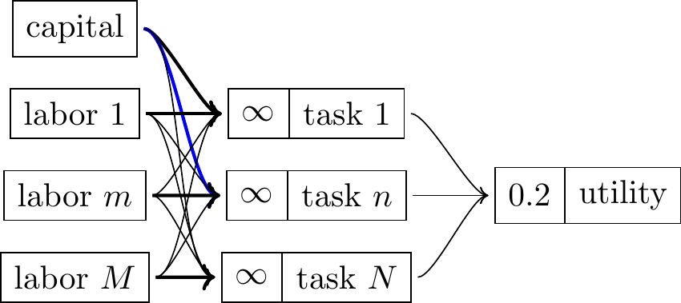
- Acemoglu and Restrepo (2022), “Tasks, Automation, and the Rise in in US Wage Inequality”
- Each type of worker does the task in which they have a comparative advantage. Gradually computers get better at different tasks, and then take over that task. Each progression increases overall output but when a group of workers gets displaced then their income declines. They argue that this model is a good fit for overall wage dynamics over 1980-2020, as workers in routine industries have become displaced.
Parameters (p2008):
| Elasticity of substitution between tasks | 0.5 | \(\lambda\) | (Humlum 2019) |
| Elasticity of substitution between labor and capital | 1 | \(\sigma\) | Karabarbounis and Neiman (2014), Oberfield and Raval (2021) |
| Elasticity of substitution between industries | 0.2 | \(\eta\) | Buera, Kaboski, and Rogerson (2015) |
| Cost savings from automation | 30% | \(\pi\) | Acemoglu and Restrepo (2020) |
- Benzell, Brynjolfsson, and Saint-Jacques (2022) “Digital Abundance Meets Scarce Architects” [UNFINISHED]
- They have three inputs: capital, labor, and architecture (produced by labor). There’s some elasticity of substitution between regular capital-labor production and architecture. They say this generates a decrease in labor share and in interest rates after a technology advance. They say the returns to architecture come through intangibles or executive compensation (I think).
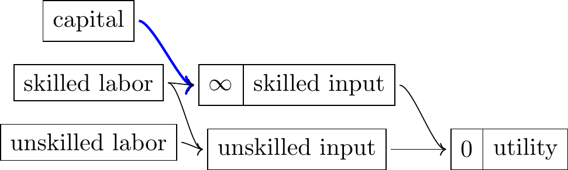
- Trammell and Korinek (2023) “Economic Growth Under Transformative AI” [UNFINISHED]
- They consider a few mechanisms: (1) AI increases capital’s substitution for labor; (2) AI increases the growth rate of TFP.
- A. K. Agrawal, Gans, and Goldfarb (2023) “The Turing Transformation”
-
They assume that products need a skilled and unskilled input which are perfect complements (\(\sigma=0\)). If AI can perfectly replace the skilled labor this will lower the wages of skilled workers but raise the wages of unskilled workers.15
- This essay is written in response to Brynjolfsson (“The Turing Trap”) and Acemoglu, who both wrote pieces saying we should avoid building AI which directly replaces human skills. They say “one person’s substitute is another person’s complement”, & this model shows that replacing some human jobs will raise wages of other humans.
- They give some examples: (1) digital maps allow anyone to be a taxi driver; (2) LLMs raise the productivity of untrained call center workers; (3) AI diagnosis would let nurses look after patients; (4) AI translation allows people to transact across borders; (5) LLMs allow people with poor literacy to communicate well.
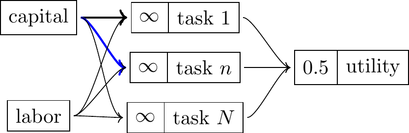
| elasticity of substitution between tasks | \(\sigma\) | 0.5 |
| current fraction of automated tasks | \(\Phi_0\) | 0.6 |
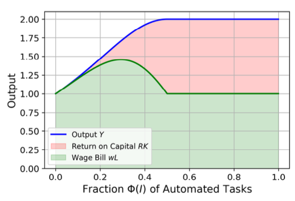 They predict that the real compensation of labor will increase then decrease as AI advances.
- Korinek and Suh (2024) “Scenarios for the Transition to AGI”
-
As in Zeira (1998) there are a fixed set of tasks performed by labor, and as AI progresses it unlocks the ability for capital to perform that task. They assume that the tasks are gross complements (\(\sigma<0.5\)), meaning that when a task becomes automatable then its expenditure share will fall.
- Their key finding: “for low levels of automation, advances in automation increase wages as the economy becomes more productive, but for higher levels of automation, wages decline due to the displacement of labor.”
- We can describe the intuition in terms of the gains from trading with another person: the gains are proportional to how different their skills are (comparative advantage). Korinek and Suh assume that AI’s skills start out very different (they can only do a few tasks), and then gradually become more similar to human skills, meaning that the relative productivity across tasks eventually becomes the same.
- \[\begin{aligned} Y &= A \left[ \int_i y(i)^{\frac{\sigma-1}{\sigma}} \, d\Phi(i) \right]^{\frac{\sigma}{\sigma-1}} && \text{(output is CES across tasks)}\\ y(i) &= a_K(i)k(i) + a_L(i)\ell(i) && \text{(each task can be performed by capital or labor)}\\ a_L(i) &= 1 && \text{(normalize labor productivity to 1)}\\ a_K(i) &= \begin{cases}1&i<I\\0&i\geq I\end{cases} && \text{(capital gradually catching up)}\\ \end{aligned}\]
- Autor et al. (2024), “New frontiers: The origins and content of new work, 1940–2018”
- This paper has a model of rolling tasks which extends Acemoglu and Restrepo (2018) to two sectors, high-skilled and low-skilled. The model distinguishes between two types of innovation: augmentation (increases the value of outputs), and automation (substitutes for labor inputs). They collect a data about occupations over time. They estimate the degree of automating vs augmenting innovation by looking at patents which can be matched to occupational titles (from the Labor Dept’s Dictionary of Occupational Titles) vs those that can be matched to names of industries (from the Census Bureau’s Index of Occupations and Industries).
- They find that the majority of current employment is in professions that were only invented since 1940, and they estimate the relative impact of augmenting vs automating innovation.
- Acemoglu (2024) “The Simple Macroeconomics of AI”
- He sets up a standard task-based model then discusses various different ways in which AI can change the parameters. However his primary quantitative prediction over the next decade uses a very simple calculation, using the following calculation:
| Share of tasks exposed to AI | 20% | Eloundou |
| Share of exposed tasks that can profitably be performed by AI | 23% | Svanberg et al. |
| => GDP share impacted by AI | 4.6% | |
| Labor cost savings in AI-performed tasks | 27% | Noy and Zhang (2023) and Brynjolfsson, Li, and Raymond (2023) |
| Labor share of output | 57% | |
| => Avg total cost savings | 15.4% | |
| => Aggregate TFP increase (=GDP share * avg cost savings) | 0.71% |
- Aghion and Bunel (2024), “AI and Growth: where do we stand”
- They use two different methods to estimate the productivity impact, both yield roughly 1%/year. Their second method is basically the same as that used in Acemoglu (2024), but paramerized with much higher numbers, that seem more reasonable to me.
- Autor (2024) “Applying AI to Rebuild Middle-Class Jobs”
-
This essay argues that expertise is the primary source of labor’s value, and that AI can be a complement to expertise rather than a substitute.
-
“Expertise is the primary source of labor’s value in the US and other industrialized countries. Jobs that require little training or certification, such as restaurant servers, janitors, manual laborers and (even) childcare workers, are typically found at the bottom of the wage ladder.”
- He says computers and the internet increased inequality:
-
“by making information and calculation cheap and abundant, computerization catalyzed an unprecedented concentration of decision-making power, and accompanying resources, among elite experts.”
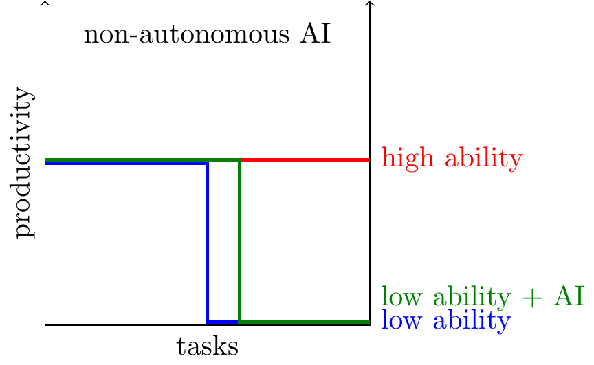
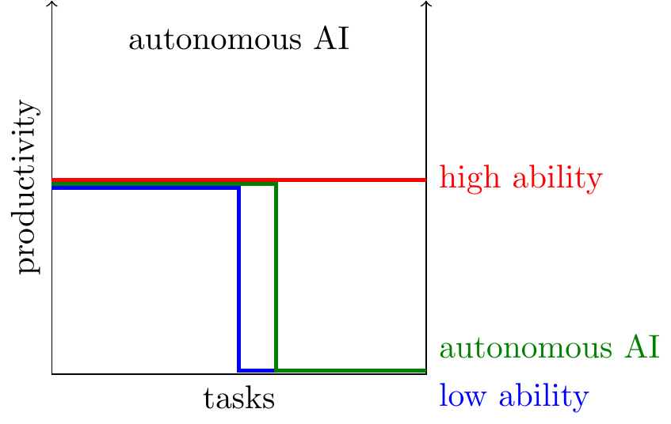
- Ide and Talamas (2024a) “Artificial Intelligence in the Knowledge Economy”
-
Each human has a ceiling on their ability (on a continuum of tasks from 0 to 1), but there’s no comparative advantage below that ceiling. Thus there’s assortative matching between skills and tasks.
- The paper has two big predictions:
-
- Non-autonomous AI will benefit the least knowledgeable. For non-autonomous AI you still need a human for every problem, so it effectively extends the range of tasks each person can handle.
-
- Autonomous AI will benefit the most knowledgeable individuals. Autonomous AI is a substitute for lowexactly like a human, and there’s vertical strafication, so it’ll lower relative returns to low types (but assumption of comparative advantage).
- Additionally there’s friction to trade, so endogenous formation of firms (partnerships between low & high ability).
- Ide and Talamas (2024b)
-
asdf
- Barnett (2025) “The economic consequences of automating remote work”
-
This blog post estimates that about 1/3 of all labor in the US could be done remotely. He then asks what would happen if we expand the supply of remote labor by 100X through AI. If the elasticity of substitution between remote labor and other labor is 0.5, then output would double. If the elasticity was 10 (his preferred estimate) then output would increase by 50X.
Technical Details

- Macroeconomic models are built from a chain of functions.
-
Macroeconomic models are typically built from production functions (mapping inputs to goods), and utility functions (mapping goods to consumer value). We’ll represent these functions with diagrams like those on the right.
- The critical assumptions in a model are over the substitutability of inputs (\(\sigma\)).
-
Most of the difference between models is in the assumptions about substitutability of inputs, represented with \(\sigma\). The elasticity can be defined as the effect of a change in relative price on relative consumption (assuming \(x_1\) and \(x_2\) are chosen to maximize profits given input prices \(p_1\) and \(p_2\)): \[\sigma_{21}=\frac{d\ln(x_1/x_2)}{d\ln(p_1/p_2)}.\]
- It is often convenient to assume that functions have the following structure, in which the elasticity of substitution is equal to \(\sigma\) everywhere (i.e. for every value of the inputs, \(A,B,C\)). \[\begin{aligned} \text{output}&=\left(\text{A}^\frac{\sigma}{\sigma-1}+\text{B}^\frac{\sigma}{\sigma-1}+\text{C}^\frac{\sigma}{\sigma-1}\right)^\frac{\sigma-1}{\sigma}. \end{aligned}\]
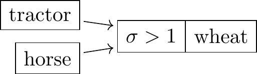
- When \(\sigma>1\), inputs are substitutes.
- For example tractors and horses are substitutes in producing wheat. This has two useful implications: (1) when the quantity of horses increases, the share of income going to horses will increase (assuming each input is paid their marginal product); (2) when the price of tractors falls then the quantity of horses demanded will fall.
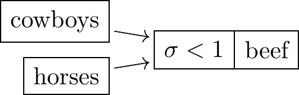
- When \(\sigma<1\), inputs are complements.
- For example cowboys and horses are complements in producing beef. This has two implications: (1) when the quantity of horses increases the share of income going to horses will decrease; (2) when the price of horses falls then the quantity of cowboys demanded will increase (for a given price of cowboys).
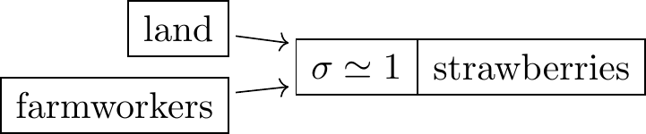
- When \(\sigma=1\), factor shares will be fixed.
- For example suppose we model a strawberry farm as producing strawberries, with land and farmworkers as inputs.
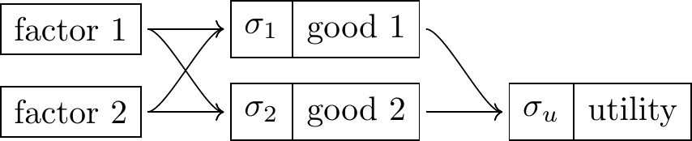
- Many of the models have two stages.
- In the first stage factors combine to create goods, in the second stage goods combine to create utility.
\[\begin{aligned} good_j &= \left(\sum_{i}factor_{i,j}^\frac{\sigma_j}{\sigma_j-1}\right)^\frac{\sigma_j-1}{\sigma_j} && \text{(production)} \\ u&=\left(\sum_{j}good_j^\frac{\sigma}{\sigma-1}\right)^\frac{\sigma-1}{\sigma} && \text{(utility)} \\ \end{aligned} \]
- We assume that all consumers consume the same ratio of goods.
-
We assume that utility is homothetic meaning that the relative consumption of different goods is independent of the level of income. Although homotheticity certainly isn’t exactly true (e.g. Engel curves for food), Ngai and Pissarides (2007) argue that it’s a reasonable approximation and is consistent with the broad facts of structural change.
- The effect of a small change in productivity on output will depend on the sector share.
-
Suppose productivity grows by 20% in one sector, and that sector constitutes 10% of the economy, then we should expect total output to increase by 2% (i.e. 20% x 10%). This is Hulten’s theorem (Hulten 1978), and holds for small changes in a competitive economy with constant returns to scale (see derivation in Acemoglu (2024)).
- The effect of a large change in productivity on output will also depend on substitutability.
-
Suppose AI makes labor much more productive in some sector, e.g. 10X more productive, then the effect on output will depend on substitutability. If \(\sigma=1\) (Cobb-Douglas), then Hulten’s theorem will continue to be accurate for large changes, but if \(\sigma<0\) (gross complements) then the effect will be smaller, where \(\lambda\) is the growth in productivity, and \(X\) is the factor share:
\[\utt{\frac{Y'}{Y}}{output}{growth}=[(1-X)+ X \lambda^{-(1-\sigma)} ]^{-\frac{1}{1-\sigma}}\]
If \(\lambda=\infty\) then growth is \((1-X)^{-\frac{1}{1-\sigma}}\).
If perfect complements (\(\sigma=0\)) then \(\frac{Y'}{Y}=\frac{1}{1-X}\), thus automating 10% of the economy will get 10% growth, and automating 50% of the economy would get 100% growth.
If perfect complements (\(\sigma=0\)) then \(\frac{Y'}{Y}=[1-X(1-\lambda^{-1})]^{-1}\).16
- The effect of productivity on factor income depends on substitutability and the factor share.
-
Suppose the productivity of factor \(X\) increases: this will increase overall output, and the incomes of all other factors, but if \(\sigma<1\) then it will decrease the share of output going to factor \(X\). The net effect on factor income will be positive if and only if the share of output going to that factor, \(s_X\), starts at a sufficiently high level \(s_X>\sigma\) (see Acemoglu (2024) p12).
Two Sector CES
See posts/2025-12-26-loaves-and-fishes-model-of-ai.qmd
A Knowledge-Sharing Model
See also 2024-08-05-ricardian-ai.md
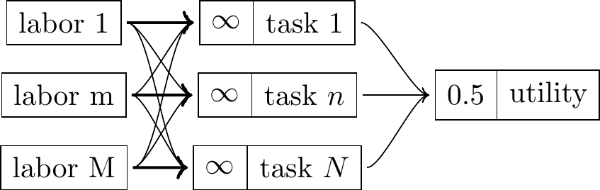
Suppose we think of LLMs as making private knowledge public. We start with a world where each person has an absolute advantage in the output that they produce:
Then LLMs share knowledge which makes everyone better at every tasks, i.e. tasks that they’re not already specialized in.

Implications & observations:
The composition of output will shift. We will produce relatively much more of the things where knowledge is a scarce input (and so wages are high): medicine, engineering, law.
Highly paid professiosn wages will fall The quantity of output will increase and the wage will fall, but aggregate welfare increases.
Measured GDP could fall. Because exchange of services would be less necessary, because we can do those things ourselves.
The incentives to discover new information will weaken. If you expect any private information to become public, through LLMs, then you will no longer be able to earn a return from possessing that information.
Junior workers become experts / learning curve is compressed. Junior workers can use LLMs to very quickly catch up.
Even physical jobs would be affected. Strawberry pickers, baristas, arborists, can ask an LLM how to solve a problem, or can ask multimodal model to critique their form.
This is similar to books and the internet. The printing press and the internet also dramatically changed the distribution of information, I guess they’d have comparable economic impact.
Bibliography
Models of the Economic Impact of AI | Tom Cunningham Models of the Economic Impact of AI | Tom Cunningham Models of the Economic Impact of AI | Tom Cunningham Tom Cunningham Tom Cunningham blog Tom Cunningham blog
Acemoglu, Daron. 2024. “The Simple Macroeconomics of AI.” National Bureau of Economic Research. https://economics.mit.edu/sites/default/files/2024-04/The%20Simple%20Macroeconomics%20of%20AI.pdf.
Acemoglu, Daron, and Pascual Restrepo. 2018. “The Race Between Man and Machine: Implications of Technology for Growth, Factor Shares, and Employment.” American Economic Review 108 (6): 1488–1542. https://doi.org/10.3386/w22252.
———. 2020. “Unpacking Skill Bias: Automation and New Tasks.” w26681. National Bureau of Economic Research. https://doi.org/10.2139/ssrn.3522330.
———. 2022. “Tasks, Automation, and the Rise in US Wage Inequality.” Econometrica 90 (5): 1973–2016. https://doi.org/10.3386/w28920.
Adachi, Daisuke, Daiji Kawaguchi, and Yukiko U Saito. 2024. “Robots and Employment: Evidence from Japan, 1978–2017.” Journal of Labor Economics 42 (2): 591–634. https://doi.org/10.1086/723205.
Aghion, Philippe, and Simon Bunel. 2024. “AI and Growth: Where Do We Stand.” https://www.frbsf.org/wp-content/uploads/AI-and-Growth-Aghion-Bunel.pdf.
Aghion, Philippe, Benjamin F. Jones, and Charles I. Jones. 2019. “Artificial Intelligence and Economic Growth.” In The Economics of Artificial Intelligence: An Agenda, edited by Ajay Agrawal, Joshua Gans, and Avi Goldfarb, 237–90. Chicago: University of Chicago Press. https://doi.org/10.7208/9780226613475-011.
Agrawal, Ajay K, Joshua S Gans, and Avi Goldfarb. 2023. “The Turing Transformation: Artificial Intelligence, Intelligence Augmentation, and Skill Premiums.” National Bureau of Economic Research. https://www.brookings.edu/wp-content/uploads/2023/06/20230612_CRM_Agrawaletal_TuringTransformation_FINAL.pdf.
Agrawal, Ajay, Joshua S Gans, and Avi Goldfarb. 2023. “Do We Want Less Automation?” Science 381 (6654): 155–58. https://doi.org/10.1126/science.adh9429.
Autor, David. 2024. “Applying AI to Rebuild Middle Class Jobs.” National Bureau of Economic Research. https://doi.org/10.2139/ssrn.4722981.
Autor, David, Caroline Chin, Anna Salomons, and Bryan Seegmiller. 2024. “New Frontiers: The Origins and Content of New Work, 1940–2018.” The Quarterly Journal of Economics, qjae008. https://doi.org/10.1093/qje/qjae008.
Autor, David, David Dorn, and Gordon H Hanson. 2021. “On the Persistence of the China Shock.” National Bureau of Economic Research. https://doi.org/10.3386/w29401.
Autor, David, David Dorn, Lawrence F Katz, Christina Patterson, and John Van Reenen. 2020. “The Fall of the Labor Share and the Rise of Superstar Firms*.” The Quarterly Journal of Economics 135 (2): 645–709. https://doi.org/10.1093/qje/qjaa004.
Autor, David, Frank Levy, and Richard J Murnane. 2003. “The Skill Content of Recent Technological Change: An Empirical Exploration.” The Quarterly Journal of Economics 118 (4): 1279–1333. https://doi.org/10.3386/w8337.
Baqaee, David Rezza, and Emmanuel Farhi. 2019. “The Macroeconomic Impact of Microeconomic Shocks: Beyond Hulten’s Theorem.” Econometrica 87 (4): 1155–1206. https://doi.org/10.3982/ecta15202.
Barnett, Matthew. 2025. “The Economic Consequences of Automating Remote Work.” https://epoch.ai/gradient-updates/consequences-of-automating-remote-work. https://epoch.ai/gradient-updates/consequences-of-automating-remote-work.
Baumol, W. J., and W. G. Bowen. 1965. “On the Performing Arts: The Anatomy of Their Economic Problems.” The American Economic Review 55 (1/2): 495–502. http://www.jstor.org/stable/1816292.
Benzell, Seth G, Erik Brynjolfsson, and Guillaume Saint-Jacques. 2022. “Digital Abundance Meets Scarce Architects: Implications for Wages, Interest Rates, and Growth.” https://www.semanticscholar.org/search?q=Digital%20Abundance%20Meets%20Scarce%20Architects%3A%20Implications%20for%20Wages%2C%20Interest%20Rates%2C%20and%20Growth.
Beraja, Martin, and Nathan Zorzi. 2022. “Inefficient Automation.” National Bureau of Economic Research. https://doi.org/10.3386/w30154.
Bessen, James E. 2016. “How Computer Automation Affects Occupations: Technology, Jobs, and Skills.” Boston Univ. School of Law, Law and Economics Research Paper, no. 15-49. https://doi.org/10.2139/ssrn.2690435.
Bessen, James, Martin Goos, Anna Salomons, and Wiljan Van den Berge. 2023. “Automatic Reaction-What Happens to Workers at Firms That Automate?” The Review of Economics and Statistics, no. Feb. 6, 2023. https://doi.org/10.2139/ssrn.3328877.
Boppart, Timo, and Per Krusell. 2020. “Labor Supply in the Past, Present, and Future: A Balanced-Growth Perspective.” Journal of Political Economy 128 (1): 118–57. https://doi.org/10.3386/w22215.
Brynjolfsson, Erik. 2023. “The Turing Trap: The Promise & Peril of Human-Like Artificial Intelligence.” In Augmented Education in the Global Age, 103–16. Routledge. https://direct.mit.edu/daed/article-pdf/151/2/272/2060604/daed_a_01915.pdf.
Brynjolfsson, Erik, Danielle Li, and Lindsey R Raymond. 2023. “Generative AI at Work.” Available at SSRN 4573321. https://doi.org/10.1093/qje/qjae044.
Buera, Francisco J, Joseph P Kaboski, and Richard Rogerson. 2015. “Skill-Biased Structural Change.” American Economic Journal: Macroeconomics 7 (3): 95–150. https://doi.org/10.3386/w21165.
Caselli, Francesco, and Alan Manning. 2019. “Robot Arithmetic: New Technology and Wages.” American Economic Review: Insights 1 (1): 1–12. https://doi.org/10.1257/aeri.20170036.
Chow, Trevor, Basil Halperin, and J Zachary Mazlish. 2023. “Transformative AI, Existential Risk, and Asset Pricing.” Working Paper. https://www.semanticscholar.org/paper/2638140868591361598cb00cf40d7899e9f5fd47.
Costinot, Arnaud, and Ivan Werning. 2023. “Robots, Trade, and Luddism: A Sufficient Statistic Approach to Optimal Technology Regulation.” The Review of Economic Studies 90 (5): 2261–91. https://doi.org/10.3386/w25103.
Davidson, Tom. 2021. “Could Advanced AI Drive Explosive Economic Growth.” Open Philanthropy 25. https://www.semanticscholar.org/search?q=Could%20advanced%20AI%20drive%20explosive%20economic%20growth.
Dixit, Avinash K, and Joseph E Stiglitz. 1977. “Monopolistic Competition and Optimum Product Diversity.” The American Economic Review 67 (3): 297–308. https://www.semanticscholar.org/search?q=Monopolistic%20competition%20and%20optimum%20product%20diversity.
Eisfeldt, Andrea L, Gregor Schubert, Miao Ben Zhang, and Bledi Taska. 2023. “The Labor Impact of Generative AI on Firm Values.” Available at SSRN 4436627. https://www.semanticscholar.org/search?q=The%20Labor%20Impact%20of%20Generative%20AI%20on%20Firm%20Values.
Erdil, Ege, and Tamay Besiroglu. 2023. “Explosive Growth from AI Automation: A Review of the Arguments.” arXiv Preprint arXiv:2309.11690. https://arxiv.org/pdf/2309.11690.pdf.
Gechert, Sebastian, Tomas Havranek, Zuzana Irsova, and Dominika Kolcunova. 2022. “Measuring Capital-Labor Substitution: The Importance of Method Choices and Publication Bias.” Review of Economic Dynamics 45: 55–82. https://doi.org/10.1016/j.red.2021.05.003.
Giuntella, Osea, Yi Lu, and Tianyi Wang. 2022. “How Do Workers and Households Adjust to Robots? Evidence from China.” National Bureau of Economic Research. https://doi.org/10.2139/ssrn.4293620.
Hemous, David, and Morten Olsen. 2022. “The Rise of the Machines: Automation, Horizontal Innovation, and Income Inequality.” American Economic Journal: Macroeconomics 14 (1): 179–223. https://doi.org/10.1257/mac.20160164.
Hotte, Kerstin, Melline Somers, and Angelos Theodorakopoulos. 2023. “Technology and Jobs: A Systematic Literature Review.” Technological Forecasting and Social Change 194: 122750. https://doi.org/10.1016/j.techfore.2023.122750.
Hulten, Charles R. 1978. “Growth Accounting with Intermediate Inputs.” The Review of Economic Studies 45 (3): 511–18. https://doi.org/10.2307/2297252.
Humlum, Anders. 2019. “Robot Adoption and Labor Market Dynamics.” Princeton University. https://www.nber.org/papers/w33777.
Ide, Enrique, and Eduard Talamas. 2024a. “Artificial Intelligence in the Knowledge Economy.” https://doi.org/10.1086/737233.
———. 2024b. “The Turing Valley: How AI Capabilities Shape Labor Income.” https://arxiv.org/pdf/2408.16443.pdf.
ILO, IMF, OECD. 2015. “Income Inequality and Labour Income Share in G20 Countries: Trends, Impacts and Causes.” https://doi.org/10.1163/2210-7975_hrd-4022-2015046.
Jones, Charles I. 2023. “The AI Dilemma: Growth Versus Existential Risk.” National Bureau of Economic Research. https://doi.org/10.1257/aeri.20230570.
Karabarbounis, Loukas, and Brent Neiman. 2014. “The Global Decline of the Labor Share.” The Quarterly Journal of Economics 129 (1): 61–103. http://www.nber.org/papers/w19136.pdf.
Katz, Lawrence F, and Kevin M Murphy. 1992. “Changes in Relative Wages, 1963–1987: Supply and Demand Factors.” The Quarterly Journal of Economics 107 (1): 35–78. https://doi.org/10.3386/w3927.
Korinek, Anton, and Donghyun Suh. 2024. “Scenarios for the Transition to AGI.” National Bureau of Economic Research. https://arxiv.org/pdf/2403.12107.pdf.
Krusell, Per, Lee E Ohanian, Jose-Victor Rios-Rull, and Giovanni L Violante. 2000. “Capital-Skill Complementarity and Inequality: A Macroeconomic Analysis.” Econometrica 68 (5): 1029–53. https://doi.org/10.1111/1468-0262.00150.
Lehr, Nils Haakon, and Pascual Restrepo. 2022. “Optimal Gradualism.” National Bureau of Economic Research. https://doi.org/10.3386/w30755.
Lu, Yingying, and Yixiao Zhou. 2021. “A Review on the Economics of Artificial Intelligence.” Journal of Economic Surveys 35 (4): 1045–72. https://www.semanticscholar.org/search?q=A%20review%20on%20the%20economics%20of%20artificial%20intelligence.
Ngai, L Rachel, and Christopher A Pissarides. 2007. “Structural Change in a Multisector Model of Growth.” American Economic Review 97 (1): 429–43. https://doi.org/10.1257/000282807780323460.
Nordhaus, William D. 2021. “Are We Approaching an Economic Singularity? Information Technology and the Future of Economic Growth.” American Economic Journal: Macroeconomics 13 (1): 299–332. https://doi.org/10.2139/ssrn.2658259.
Noy, Shakked, and Whitney Zhang. 2023. “Experimental Evidence on the Productivity Effects of Generative AI.” arXiv Preprint arXiv:2304.02313. https://arxiv.org/pdf/2304.02313.pdf.
Oberfield, Ezra, and Devesh Raval. 2021. “Micro Data and Macro Technology.” Econometrica 89 (2): 703–32. https://doi.org/10.2139/ssrn.2188988.
Ricardo, David. 1821. On the Principles of Political Economy. J. Murray London. https://www.semanticscholar.org/search?q=On%20the%20principles%20of%20political%20economy.
Sachs, Jeffrey D, and Laurence J Kotlikoff. 2012. “Smart Machines and Long-Term Misery.” National Bureau of economic research. https://doi.org/10.3386/w18629.
Smith, Noah. 2024. “Plentiful, High-Paying Jobs in the Age of AI.” https://www.noahpinion.blog/p/plentiful-high-paying-jobs-in-the.
Trammell, Philip, and Anton Korinek. 2023. “Economic Growth Under Transformative AI.” National Bureau of Economic Research. https://doi.org/10.3386/w31815.
Zeira, Joseph. 1998. “Workers, Machines, and Economic Growth.” The Quarterly Journal of Economics 113 (4): 1091–1117. https://doi.org/10.1162/003355398555847.
The only review article I’m aware of is Lu and Zhou (2021) from 2021.↩︎
Boppart and Krusell (2020) say “across countries and historically, hours fall steadily by a little below 0.5% per year.”↩︎
If the relative price of output fell by 10X and the relative consumption increased by 5X this implies an elasticity of substitution between consumption and leisure slightly below 1 (\(\sigma=\frac{d\ln(x_G/x_L)}{d\ln(p_L/p_G)}=\frac{\ln(5)}{\ln(10)}\simeq 0.7\)).↩︎
Nordhaus (2021) says “the sectors that are experiencing the most rapid price declines are also experiencing slight declines in expenditure shares.” This is also the assumption underlying the “cost disease” model in Baumol and Bowen (1965).↩︎
Autor et al. (2020) say “Although there is controversy over the degree to which the fall in the labor share of GDP is due to measurement issues … there is a general consensus that the fall is real and significant.”↩︎
Gechert et al. (2022) survey the literature and argue the elasticity of substitution between capital and labor is well below 1, which would imply that increasing the productivity of capital would increase the labor share. Acemoglu (2024) assumes aggregate capital and labor have elasticity of substitution of 0.5.↩︎
They say ” a rise in superstar firms would occur if consumers have become more sensitive to quality-adjusted prices due to, for example, greater product market competition (e.g., through globalization) or improved search technologies … or the growth of platform competition”↩︎
This discussion is taken from Aghion, Jones, and Jones (2019) on p4.↩︎
This is what happens in Acemoglu and Restrepo (2018) with “full automation”: there is comparative advantage between labor and capital, but the labor share goes to zero.↩︎
Smith (2024) seems to acknowledge that this argument undercuts the comparative advantage argument for high wages. He has two responses: (1) that the government would limit energy use by AI (“if human lives are at stake … most governments seem likely to limit AI’s ability to hog energy.”) or (2) that the non-energy costs of AI compute are high (“turning energy into compute is really, really expensive and hard … [t]hose bottlenecks are specific to compute; unlike energy, they’re not things that you can allocate back and forth between compute manufacturing and human consumption.”)↩︎
It’s closely related to an informal argument in Autor (2024): he says “[AI] would simultaneously temper the monopoly power that doctors hold over medical care, lawyers over document production, software engineers over computer code, professors over undergraduate education, etc.”↩︎
This discussion is taken from Aghion, Jones, and Jones (2019) on p4.↩︎
A nice observation (p1500): if the CES coefficients (\(\sigma\) and \(\zeta\)) are both equal to 1 then aggregate output will be Cobb-Douglas, where the capital share is the share of tasks that are automated.↩︎
I believe A. Agrawal, Gans, and Goldfarb (2023) has the same basic argument but I could not find a copy online.↩︎
Baqaee and Farhi (2019) extend Hulten’s theorem beyond first-order terms and show that second-order terms are often important, e.g. in calibrations to oil shocks .↩︎